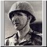

|
|
MALOS DE LA HISTORIA |
Aurora
Rodriguez.- La madre araña
Berenguel
de Landoria.- El santo carnicero
Calígula.-
Asesino compulsivo
Carlos
D'Espagnac.- El fanático reaccionaro
Catalina
de Médicis.- El veneno de la belladona
Cecil
Rhodes.- Un racista imponente
General
Custer.- Al mando del Séptimo de Caballería
Ed
Gein.- El psicópata canibal
Enriqueta
Martí.- La vampira del Carrer Ponent
Facundo Quiroga.- El Tigre de Los
Llanos
François y
Jean-Claude Duvalier.- Un papá y un bebé muy crueles
Gilles de Rais.- El placer del mal
Idi Amín Dadá.- El Hitler
africano
Joseph Fouché.- La serpiente
enroscada
El rey Leopoldo II de Bélgica.-
Amo y señor del Congo
Oliver Cromwell.- El intérprete
de Dios
Qin Shihuang.- El Emperador que quiso
ser inmortal
Rasputín.- El místico depravado
Reinhard Heydrich.- El secuaz más
cruel de Hitler
Tamerlán.- El rostro de la guerra
Ufkir.- El general traidor
Federico de Montefeltro, Duque
de Urbino.- Eucaristía de sangre
 |
AURORA RODRIGUEZ, sufría de graves delirios de grandeza. Un día decidió emular a Dios y tener un hijo que salvara a la Humanidad. Fue niña: Hildegart. La amaestró, la educó, la convirtió en figura política y pública. A los 17 años ya había terminado la carrera de Derecho. Pero pronto quiso ser libre. Y su madre la mató. |
 |
BERENGUEL DE LANDORIA, arzobispo de Santiago en 1317, fue protagonista de una época convulsa en la historia de la Iglesia. Para hacerse con el control de Compostela tuvo que batallar y mandar asesinar. Una de las torres de la catedral lleva su nombre, la Berenguela, para recordar al hombre que la conquistó. |
| CALÍGULA, diminutivo de Cayo César por las sandalias que solía vestir, padeció tal locura que superó en perversión a su antecesor, el malvado Tiberio. "Que me odien, con tal de que me teman", es la frase que acuñó durante su imperio para justificar las mayores atrocidades. Obligó a suicidarse a su suegro, mató a su abuela, sedujo a sus hermanas y maltrató a muchos de los senadores de Roma. |
 |
CARLOS D'ESPAGNAC, más conocido como el conde de España, ha sido uno de los personajes más siniestros de la historia contemporánea de nuestro país. Exaltado absolutista, beato compulsivo y estrambótico personaje, fue durante cinco años amo y señor de Cataluña, persiguiendo y exterminando a todos los sospechosos de liberales. |
 |
CATALINA DE MÉDICIS, reina de Francia y madre de reyes, fue la instigadora de la masacre de la Noche de San Bartolomé (24 de agosto de 1572), en la que murieron asesinados en París más de 4.000 protestantes. Intrigante y defensora de sus hijos, no dudó en emplear los más potentes venenos contra quien se ponía en su camino. |
 |
CECIL RHODES, convencido de la superioridad de la raza blanca y angloparlante, consiguió en su medio siglo de vida hacerse millonario gracias a las minas de diamantes y a cambiar el mapa del continente africano. Mandó asesinar a miles de personas y llegó a dominar dos países que llevaron su apellido, Rhodesia del Norte y del Sur. |
|
EL GENERAL CUSTER, es uno de los grandes mitos de Estados Unidos. Su actuación en la guerra civil entre el Norte y el Sur le granjeó un puesto en la nómina de los héroes legendarios, pero la historia no puede ocultar que fue también el responsable de la masacre del río Washíta, donde asesinaron a muchos indios cheyenes. |
 |
ED GEIN, era aparentemente inofensivo. Pero su aspecto ocultaba al más desalmado psicópata del siglo XX. Convirtió su granja de Plainfield, Wisconsin (EE UU), en un matadero donde descuartizaba, desollaba y se comía a sus víctimas. Sus crímenes inspiraron tres películas de terror: "Psicosis", "La matanza de Texas" y "El silencio de los corderos". |
 |
ENRIQUETA MARTÍ, sembró de horror la Barcelona de 1912. Secuestraba, prostituía y asesinaba a niños para extraerles la sangre, las grasas y el tuétano de los huesos y elaborar pócimas que sus clientes consideraban mágicas. El relato de las dos niñas que liberó la policía fue recogido por la prensa de la época con buena dosis de morbo. |
 |
FACUNDO QUIROGA, ha pasado a la historia como paradigma del poder y la violencia en Latinoamérica, de la trayectoria vital que desemboca en el caudillismo visionario y despiadado. Gaucho de energía brutal y mirada colérica, fue uno de los "señores de la guerra" de la Argentina del siglo XIX. |
 |
FRANÇOIS Y JEAN-CLAUDE DUVALIER, 'Papa' y 'Baby Doc'. Toda dictadura es absurda, pero la de estos dos hombres llegó a unos límites imposibles de entender. Hundieron a su país, Haití, en la pobreza y el caos más absolutos. El poder a cualquier precio durante 30 años. El terror por el terror, la sangre por la sangre. |
 |
GILLES DE RAIS, fue un criminal loco y sádico. Mariscal de Francia con el rey Carlos VII emprendió una carrera de sexo y sangre que le hizo emular a un monstruo de cuento, Barbazul. De Rais fue ajusticiado en Nantes en 1440. Antes escribió: "Yo hice lo que otros hombres sueñan. Yo soy vuestra pesadilla". Con él finaliza esta serie por la que han desfilado medio centenar de hombres y mujeres a los que la historia ha tildado de malvados. |
 |
IDI AMÍN DADÁ, gobernó Uganda como un dictador de 1971 a 1979. Cuando finalmente fue derrocado dejó tras de sí más de 300.000 cadáveres, miseria y devastación. Sus atrocidades eran incontables: mostraba las ejecuciones en directo por televisión, mutiló el cadáver de una de sus esposas... y no pagó por ello. Murió en la cama. |
| JOSEPH FOUCHÉ, su biografía marcó dos décadas de la historia de Francia. Maestro de la doblez, sirvió con ahínco a la monarquía y a la república; a Napoleón y a Luis XVIIl. Eterno ministro de Policía, cargo al que dio forma y contenido, hombre feo y funcionarial fusiló a enemigos y opositores sin inmutarse. Murió humillado en el destierro. |
 |
EL REY LEOPOLDO II DE BÉLGICA, remató bien su macabra jugada. Hizo creer al mundo, desde exploradores hasta estadistas, que su interés por África respondía exclusivamente a causas humanitarias, y convirtió el Congo en su finca particular para explotar, sin escrúpulo ninguno, a la población. Su «capricho» costó cinco millones de vidas. |
 |
OLIVER CROMWELL (1599-1658), protagonista del único periodo republicano de la historia de Inglaterra, quiso el gobierno de todos, pero acabó erigido en dictador. Astuto, cruel y convencido de tener a Dios de su lado, alcanzó el paroxismo en Irlanda, donde pasó, a cuchillo a poblaciones enteras. |
 |
QIN SHIHUANG, unificó China y emprendió la construcción de la Gran Muralla. El primer emperador chino fue un tirano malvado que persiguió a los intelectuales, dictó leyes injustas y en su megalomanía feroz quiso ser enterrado como un faraón con su ejército de guerreros de Xi'an. Siglos después, Mao revalorizó su figura. |
| RASPUTÍN, fue para sus adeptos un santo, y para sus muchos enemigos, la encarnación del anticristo. En vida fue tratado de vidente, violador, borracho, conspirador político, sanador milagroso, milagrero farsante y espía alemán. Su leyenda y su realidad misteriosa le convierten en un personaje apasionante de la historia. |
| REINHARD HEYDRICH, "el verdugo de Hitler", fue el más abyecto de los criminales nazis. Ambicioso, resentido, frío y calculador, el jefe de seguridad del III Reich, ideólogo de la 'solución final', impulsó con saña el exterminio de millones de judíos. Acabó sus días en Praga, asesinado por un comando checo. |
| TAMERLÁN, fue el último de los grandes conquistadores nómadas de Asia central en el siglo XIV. Borracho de poder y sangre, el héroe turco-mongol se transformó en un déspota cruel. Saqueó Bagdad y Damasco; en Isfahán no respetó a la población rendida y ordenó matar a sus 70.000 habitantes; en Delhi fue tal el horror, que exclamó: "Yo no quería eso". |
|  | El GENERAL UFKIR, héroe, villano y golpista. La vida de este militar encarna la perversión en estado puro. Hombre de confianza de Mohamed V primero y de Hassan II después, se ocupó de someter a los marroquíes y gestionar las cloacas del régimen. Torturador y maquiavélico, murió como un traidor tras haber atentado contra su rey. |
| FEDERICO DE MONTEFELTRO, DUQUE DE URBINO, un hombre devoto y sin vicios, considerado un modelo de estadista, fue en realidad el asesino de Giuliano de Médicis y autor de una conjura que pudo cambiar la historia del Renacimiento. 500 años después se ha desvelado su secreto. |